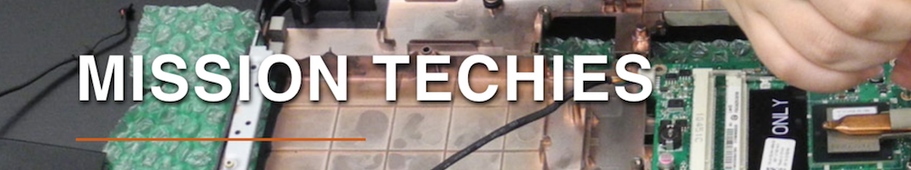

About
Greetings Classmates,
As our first pair programming project, we are helping future techies
complete their first week in the Mission Techies Program.
What:
Mission Techies is a program that trains moderate computer users how to
code, build websites, and run programs.
How to Apply:
- You must be an SF resident
- Link to application
- Bring your a Social Security card, passport or certified birth certificate to first day of class.
Location
How to Prepare:
Bring, or replace, your social security card
(2-4 weeks before class starts) You can request a new card online, but best to go in person to receive your card the same day.
Go early for the shortest line, otherwise expect a half day visit.
FAQ
What kind of computers can you use?
Computers are offered in class, but you'll have homework where you
need access to a computer outside of class. A computer that runs OSX
or Windows would be easier to work with in this course.
Getting familiar with your computer:
The Terminal
- Search "Terminal" in the bar on upper right hand of monitor,
and open up the icon (looks like a small black computer screen).
- You will want to try understand how to use the terminal in your
computer. Try a few simple commands (to list files, type "ls", to change directory, type "cd")
Setting your computer up:
Google Chrome
- Download and install Google Chrome.
- Chrome is the most adaptable and least buggy browser.
Class Folder
- Create a folder that you will use for class, most conveniently in the Desktop folder of your personal computer.
Preparing to code:
Git Software
- Visit git-scm to download and install Git software. This will allow your computer
to update and share git folders/docs.
Atom
- Visit Atom and download/install Atom (editor for HTML Docs).
Slack, Github
Create accounts at Github and Slack.
- Your Github account will allow you to store, download, and share
Github files with yourself on different computers that have Git
installed, so you can collaborate with others or use multiple
computers for joint projects.
- Your Slack account is a group communication platform for all of us developers to chat.
Here's our Slack channel.
How do I learn HTML?
Learn HTML here
HTML Documentation:
You can download these resources to your computer
for offline access.
Support/Contact
Eduardo Garcia, Instructor - eduardo@eagarcia.com
Rafeeq Wilson, MEDA Technology Coordinator - rwilson@medasf.org